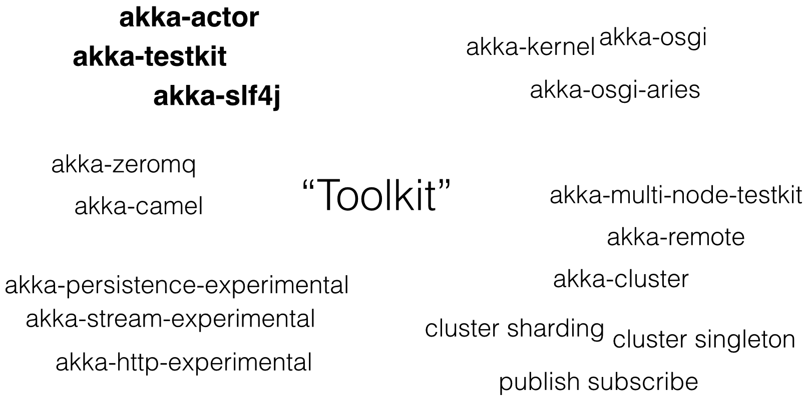

What is Akka?

The Actor Model
- Actors sends messages asynchronously
- Actors process messages sequentially

Hello Actor
import akka.actor._
case class SayHello(name: String)
class GreetingActor extends Actor {
def receive = {
case hello: SayHello => {
sender ! "Hello " + hello.name
}
}
}
object GreetingActor extends App {
val greetingActor = ActorSystem("MySystem").actorOf(Props[GreetingActor])
greetingActor ! SayHello("Pope Benedict")
}
Akka Cluster - Features
- Cluster membership. Location transparent & failure detector.
- Most features of akka-actor
- Sane abstraction level
- Extensions. Cluster singleton, pub-sub, cluster sharding, and more.
Cluster Membership
class ClusterActor extends Actor {
Cluster(context.system)
.subscribe(self, initialStateMode = InitialStateAsEvents, classOf[MemberEvent])
def receive = {
case MemberUp(member) => {
log.info("Member is Up: {}", member.address)
}
case MemberRemoved(member, previousStatus) => {
log.info("Member is Removed: {} after {}", member.address, previousStatus)
}
}
}
Cluster Membership
class ClusterActor extends Actor {
val members = mutable.Set[Member]()
Cluster(context.system)
.subscribe(self, initialStateMode = InitialStateAsEvents, classOf[MemberEvent])
def receive = {
case MemberUp(member) => {
members.add(member)
if (member.hasRole("backend")) {
val path: ActorPath = RootActorPath(member.address) / "user" / "worker"
context.actorSelection(path) ! "hello"
}
}
case MemberRemoved(member, previousStatus) => members.remove(member)
}
}Cluster Config
akka {
remote.netty.tcp {
hostname = "127.0.0.1"
port = 8000
}
cluster {
seed-nodes = [
"akka.tcp://MySystem@127.0.0.1:8000",
"akka.tcp://MySystem@127.0.0.1:8001"
]
roles = ["backend"]
auto-down-unreachable-after = 10s
}
actor {
provider = "akka.cluster.ClusterActorRefProvider"
}
extensions = ["akka.contrib.pattern.DistributedPubSubExtension"]
}Pub-sub Extension
class Subscriber extends Actor {
val mediator = DistributedPubSubExtension(context.system).mediator
mediator ! Subscribe("content", self)
def receive = {
case s: String => log.info(s)
}
}
class Publisher extends Actor {
val mediator = DistributedPubSubExtension(context.system).mediator
mediator ! Publish("content", "hello")
def receive = { case _ => }
}
Cluster Singleton Extension
system.actorOf(ClusterSingletonManager.props(
singletonProps = Props(classOf[Consumer]),
singletonName = "consumer",
terminationMessage = End,
role = Some("worker")),
name = "singleton")
When to use Akka?
Vegvesenet skal høste 10.000 datameldinger om trafikken hvert sekund hele året
Datainn - Where does Akka fit in?
Questions?